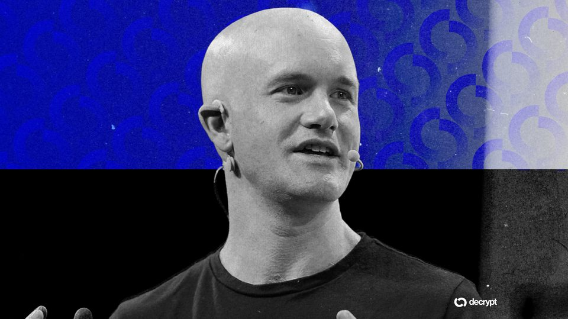
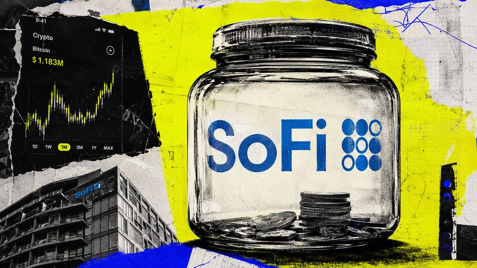
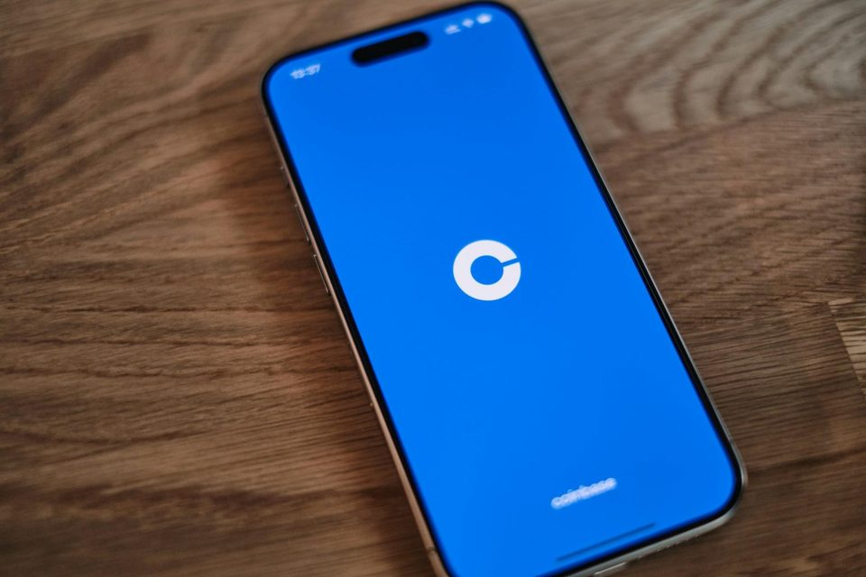
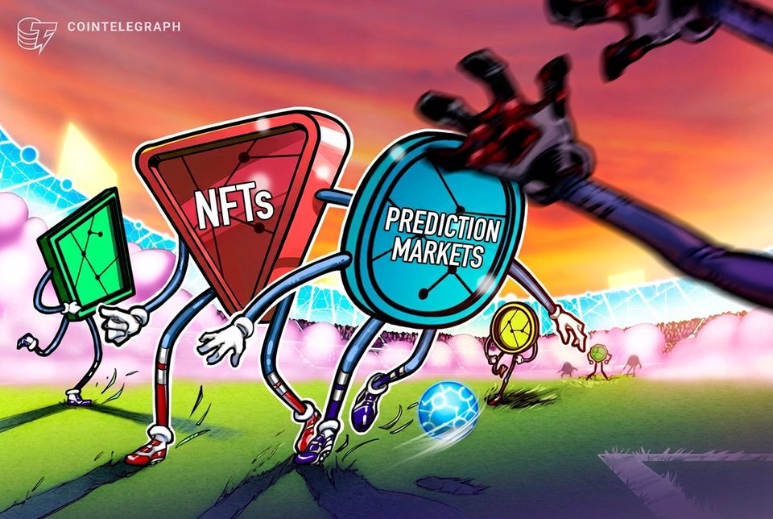

July 30, 2026
Daily headline set with source diversity, cleaned links, and local static rendering.
US Senators sent revised ethics rules to White House for CLARITY Act: Report
The window to pass a comprehensive crypto market structure bill before the Senate breaks for a month-long recess is closing, with ethics a dividing issue for many lawmakers.
Why 37 million Celsius bankruptcy shares are blocked from an immediate cash-out despite Nasdaq debut
IOND closed its first session at $62.90, while broker transfers and securities restrictions still shaped practical liquidity. The post Why 37 million Celsius bankruptcy shares are blocked from an immediate cash-out...

Coinbase Misses on Q2 Earnings as Crypto Trading Activity Slows
The exchange reported lower quarterly revenue and a net loss as crypto trading activity declined, while subscription, stablecoin, and lending businesses continued to grow.
Strategy books $8.2 billion second quarter loss on bitcoin price decline
Strategy books $8.2 billion second quarter loss on bitcoin price decline
Strategy posts $8.2B Q2 loss as Bitcoin slump drives unrealized losses
The Bitcoin treasury company said it has built a $3.75 billion cash reserve to support preferred stock payouts following the launch of its BTC monetization program.

SoFi reported 388,336 crypto products, but Q2 net transaction revenue only reached $1.2 million
The filing shows $134.267 million gross, $133.084 million in transaction costs, and no standalone crypto profit figure. The post SoFi reported 388,336 crypto products, but Q2 net transaction revenue only reached $1.2...

Treasury Secretary Invokes Bitcoin Creator Satoshi Nakamoto in Plea for Clarity Act
Scott Bessent urged the Senate to immediately vote on the crypto market structure bill, accusing Democrats of delaying the legislation for political reasons.

Coinbase sinks 5% after missing second quarter revenue estimates
Coinbase sinks 5% after missing second quarter revenue estimates

World Cup generated $20B in blockchain prediction market volume: Chainalysis
The blockchain analytics firm said the World Cup attracted global participation in prediction markets and digital collectibles, with more than 400,000 wallets placing blockchain-based bets.
Bitcoin struggles to turn US GDP miss into bullish catalyst as strong spending backs Fed caution
Bitcoin briefly topped $65,000 on Thursday after US economic growth fell short of forecasts. Data from CryptoSlate show the largest cryptocurrency trading near $64,729 as of press time after reaching an intraday high of...
Researchers Tried Letting AI Do Science. It Failed
A multi-institution study found that today's frontier AI agents could handle the mechanics of research but failed to produce original work worthy of acceptance at a top AI conference.
Global banks test tokenized money for cross-border payments in $1 million BIS pilot
Global banks test tokenized money for cross-border payments in $1 million BIS pilot